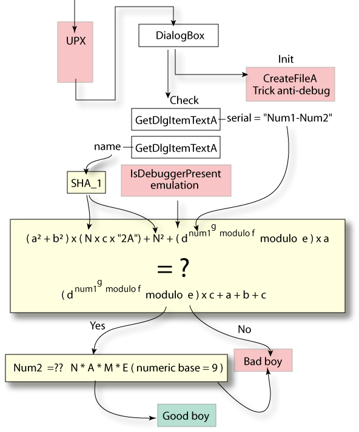

2.SCHEMA DU KEYGENME.
Voici donc pour commencer un rapide aperçu du fonctionnement de ce keygenme. J'ai représenté en jaune la partie "calculs" et en rouge la partie Anti-Debug/Anti-desassemblage.

Pour commencer, vous pouvez constater que le binaire est compressé par UPX. La présence d'un packer /compresseur est souvent le signe d'une tentative de camouflage de chaines de caractères gênantes. Nous prendrons donc bien soin de snooper le binaire avant de commencer l'analyse à proprement parlé.
La partie la plus intéressante est bien évidemment celle qui concerne le calcul et le check du serial. Deux simples GetDlgItemTextA permettent de récupérer le nom et le serial. Comme je l'ai précisé sur le schéma, le serial a un format XXXX-XXXX où les XXXX sont des valeurs numériques. Je les ai baptisées Num1 et Num2. Vous remarquez également que le check du serial se déroule en deux temps :
- Tout d'abord, une grosse routine qui checke le Num1 en utilisant un hash du Nom (SHA1).
- Puis, un check sur le Num2 qui utilise cette fois les lettres du nom.
Le Check de Num1
Il s'agit de la plus grosse routine de vérification. Elle nécessite l'utilisation impressionnante de 10 nombres, à savoir :
- 8 bignums hardcodés que j'ai nommé a,b,c,d,e,f,g.
- Num1 qui sera converti en bignum à son tour.
- Un SHA1 sur le Nom que j'ai appelé N.
- Un byte "2A".
Il s'agit en fait de résoudre une grosse équation non linéaire dont l'inconnue est Num1. Cette valeur se trouve être la puissance d'un bignum et est elle même élevée à une certaine puissance. Pour rendre les choses plus amusantes, le tout est agrémenté de modulos différents.
Les Tricks
Peu nombreux et très simples, ils ne sont là que pour ennuyer un reverser débutant et ne présentent finalement aucune difficulté en comparaison avec l'algorithme de vérification.
Je vais donc commencer par analyser ces tricks.